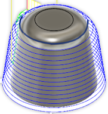

<div id="steepShallowOrderPriority"><p>急斜面領域および緩斜面領域の切削順序を選択します。</p>

<table class="tipTable" cellspacing="10">
<tr>
<td><center></center></td>
<td><center></center></td>
</tr><tr>
<td><center><p><b>最初にトップ</b><br><em>最初にすべてのトップを切削</em></p></center></td>
<td><center><p><b>急斜面から</b><br><em>最初にすべての側面を切削</em></p></center></td>
</tr></table>
</div>